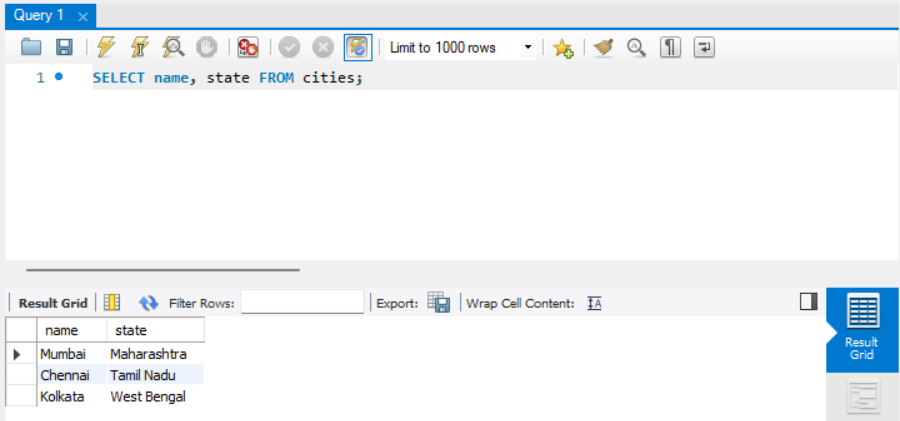
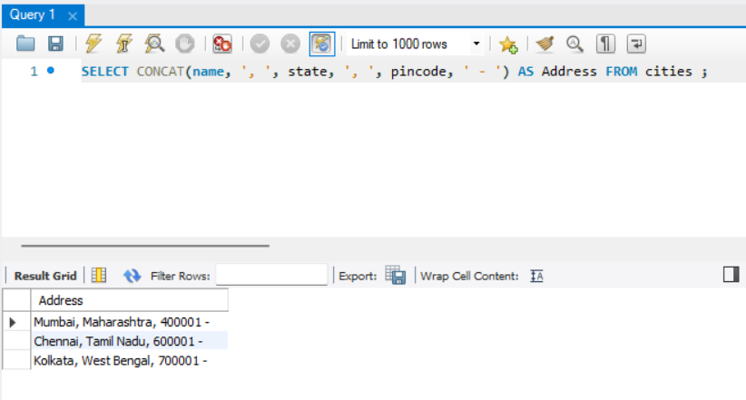
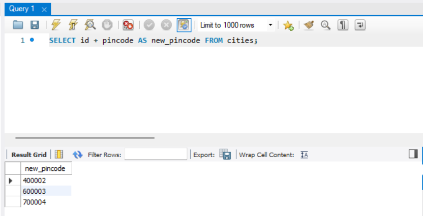
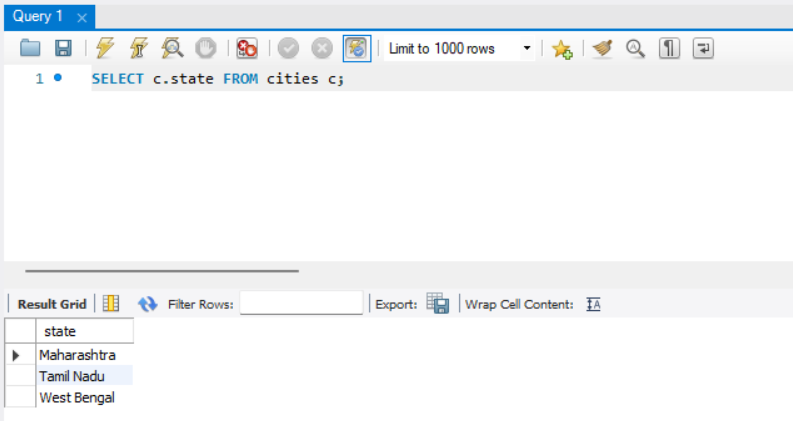
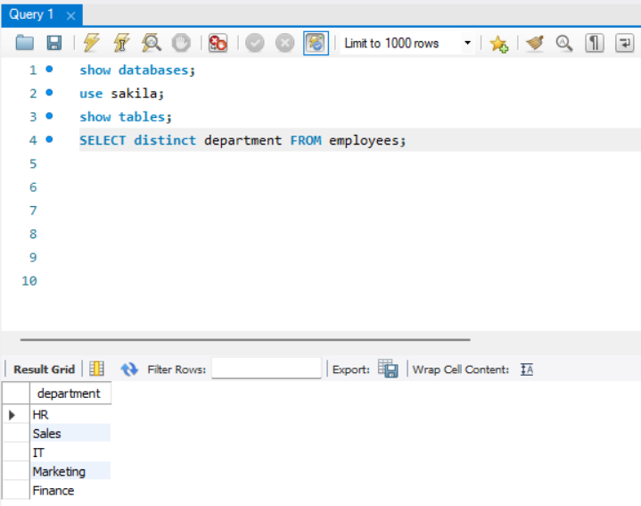

Select and Distinct
Contents
Select and Distinct¶
SQL SELECT AND FROM¶
In SQL, the SELECT and FROM clauses are fundamental components of a query used to retrieve data from a database table.
SELECT: The SELECT clause is used to specify the columns or expressions that you want to include in the query result. It determines which data will be retrieved from the table. You can select specific columns by mentioning their names, or you can use wildcard characters (such as *) to select all columns.FROM: The FROM clause specifies the table or tables from which you want to retrieve the data. It identifies the source of the data that you want to query. You mention the name of the table(s) from which you want to retrieve the data.
The basic syntax for a simple query using SELECT and FROM looks like this:
SELECT column1, column2, ...
FROM table_name;
You replace column1, column2, ... with the actual column names you want to retrieve from the table, and table_name with the name of the table you want to query.
For example, to retrieve all columns from a table called “employees”, the query would be:
SELECT *
FROM employees;
This would retrieve all the data from the “employees” table.
To select one or more columns from a table in SQL, you use the SELECT statement. Here’s the basic syntax:
SELECT column1, column2, ...
FROM table_name;
In the SELECT clause, you specify the column(s) you want to retrieve from the table. You can list multiple columns separated by commas. If you want to retrieve all columns, you can use the wildcard character (*) instead of explicitly listing the column names.
For example, let’s say we have a table called “employees” with columns for employee_id, name, and salary. To select only the name and salary columns from the table, the query would be:
SELECT name, salary
FROM employees;
This query will retrieve the “name” and “salary” columns for all rows in the “employees” table.
By specifying the desired columns in the SELECT clause, you can control which data is retrieved from the table, allowing you to focus on specific information as needed.

SQL (Structured Query Language) is generally not case-sensitive, which means it doesn’t distinguish between uppercase and lowercase letters in keywords and function names. This characteristic applies to the SQL language itself, including commands, clauses, and function names. For example, the keywords SELECT, select, and SeLeCt are considered the same by most SQL databases.
Note
SELECT statements are not case-sensitive so we can also write.
select name from cities;
By default, many SQL database systems are configured to be case-insensitive for column names as well. This means you can refer to a column name in any case (uppercase, lowercase, mixed case) in your SQL queries, and the database system will recognize it as the same column. For example, if you have a column named FirstName, the following references would be considered equivalent:
SELECT FirstName FROM ...
SELECT firstname FROM ...
SELECT FIRSTNAME FROM ...
SELECT FiRsTnAmE FROM ...
But convention is to use upper case letters for keywords to differentiate from other text.
SQL ALIASES¶
SQL Aliases are used to provide temporary alternative names for columns or tables in a SQL query. They make the query more readable and concise by assigning shorter or more meaningful names to columns or tables.
There are two types of aliases in SQL:
1. Column Aliases:¶
Column aliases are used to provide alternative names for columns in the query result.
They are defined in the SELECT clause using the “AS” keyword or without it.
The alias can be used in the query result, subsequent clauses, or other parts of the query.
Example:
SELECT column_name AS alias_name
FROM table_name;
2. Table Aliases:¶
Table aliases are used to assign a shorter or more readable name to a table in the query.
They are defined in the FROM clause using the “AS” keyword or without it.
The alias can be used to refer to the table in the query instead of the full table name.
Example:
SELECT column_name
FROM table_name AS alias_name;
Aliases are particularly useful in queries involving multiple tables or complex calculations. They improve the clarity and maintainability of the SQL code by providing concise names for columns or tables. Additionally, they allow for self-explanatory queries and help avoid naming conflicts when multiple tables or expressions are involved in the query.


Alias ‘c’ is defined for ‘cities’ table and used to refer column ‘state’ from table ‘c’.

Note
Aliases are useful when :
more than one tables involved in a query
column names are long and/or not readable
more than one columns are combined together
DISTINCT KEYWORD¶
What is DISTINCT keyword?¶
In SQL, the DISTINCT keyword is used in a SELECT statement to retrieve unique values from a column or a combination of columns in a table. It eliminates duplicate rows from the result set, returning only distinct or unique values.
Here are some key points about the DISTINCT keyword:
The DISTINCT keyword is placed immediately after the SELECT keyword in a SELECT statement.
It can be used with one or more columns to identify unique combinations of values.
When the DISTINCT keyword is used, the result set will include only one instance of each unique value or combination of values.
The DISTINCT keyword applies to all selected columns unless specified for specific columns.
The DISTINCT keyword is commonly used with the SELECT statement, but it can also be used in conjunction with other SQL clauses like ORDER BY, GROUP BY, and HAVING.
How is DISTINCT keyword used?¶
The syntax for using the DISTINCT keyword in SQL is as follows:
SELECT DISTINCT column1, column2, ...
FROM table_name;
Here’s a breakdown of the syntax:
Start with the SELECT keyword to specify that you want to retrieve data.
Follow it with the DISTINCT keyword to indicate that you want to retrieve only distinct or unique values.
Specify the column or columns from which you want to retrieve distinct values. Multiple columns can be separated by commas.
Specify the table from which you want to retrieve the data using the FROM keyword, followed by the table name.
Here’s an example to illustrate the syntax:
Consider a table named “products” with columns like “product_id”, “product_name”, and “category”. To retrieve the distinct categories from the table, the SQL query would be:
SELECT DISTINCT category
FROM products;
This query will return a list of distinct categories from the “category” column of the “products” table.
Remember that the DISTINCT keyword applies to the entire selected row, not just a specific column. It filters out duplicate rows based on the values of the specified columns, returning only unique combinations of values.
Note
The DISTINCT keyword is not applicable to individual columns within a row. It considers all selected columns together while determining uniqueness.
In summary, the DISTINCT keyword is used in SQL to obtain unique values from one or more columns in a table. It helps eliminate duplicate rows in the result set and is often used to retrieve unique or distinct values for analysis or reporting purposes.
How does DISTINCT keyword work?¶
Here’s how the DISTINCT keyword works:
The SELECT statement retrieves data from one or more columns of a table.
When the DISTINCT keyword is used, the database engine evaluates the values of the specified columns for each row in the result set.
It compares these values to identify and eliminate duplicate rows.
Only the first occurrence of each unique combination of values is included in the final result set.
The result set retains the original order of appearance unless an ORDER BY clause is used to specify a different sorting order.
Here’s an example to illustrate how the DISTINCT keyword works:
Consider a table named “employees” with columns like “employee_id”, “name”, and “department”. If you run the following query:
SELECT DISTINCT department
FROM employees;
The database engine will evaluate the values in the “department” column for each row. It will eliminate duplicate rows and return only the unique department values present in the table.
In summary, the DISTINCT keyword helps to filter out duplicate rows and retrieve only unique values from the specified columns in the result set.

Exercise¶
Theory questions:¶
What is SELECT clause?
What is use of SELECT clause?
What is the DISTINCT keyword in SQL, and why is it used in SELECT statements?
How does the DISTINCT keyword determine uniqueness in a result set? Can it be used with multiple columns simultaneously? Give an example.
What happens if you use the DISTINCT keyword with a SELECT statement but don’t specify any columns? How does it affect the result set?
Table for questions:
CREATE TABLE Products (
id INT AUTO_INCREMENT PRIMARY KEY,
name VARCHAR(255),
price DECIMAL(10, 2),
quantity INT,
category VARCHAR(255),
manufacture_date DATE
);
INSERT INTO Products (name, price, quantity, category, manufacture_date)
VALUES
('Alpha Phone', 999.99, 50, 'Electronics', '2023-01-15'),
('Beta Laptop', 1249.99, 30, 'Electronics', '2023-02-10'),
('Gamma Headphones', 149.99, 100, 'Accessories', '2023-02-20'),
('Delta Printer', 89.99, 40, 'Office Supplies', '2023-03-01'),
('Epsilon Desk Chair', 199.99, 75, 'Furniture', '2023-01-25'),
('Zeta USB Cable', 5.99, 500, 'Accessories', '2023-03-15'),
('Eta Wireless Mouse', 29.99, 150, 'Electronics', '2023-03-05'),
('Theta Flash Drive', 19.99, 200, 'Electronics', '2023-02-28'),
('Iota Water Bottle', 14.99, 300, 'Home Goods', '2023-01-20'),
('Kappa Notebook', 3.99, 600, 'Office Supplies', '2023-03-10');
Coding Questions:¶
Select all product names from the Products table and alias the column as ProductName.
Retrieve the price for each product, using an alias ProductPrice.
Get the quantity of each product in stock, with the column aliased as StockQuantity.
List the category for each product, using ProductCategory as an alias for the column.
Select the manufacture date for each product, and alias it as ManufactureDate.
Retrieve the names of all products, but alias the column as ItemName.
Display the price for each product, with the column header as ItemPrice.
Get the quantity in stock for each item, and use AvailableStock as the column alias.
List each product’s category, with the column aliased to ItemType.
Select the manufacture date of all items, using DateOfManufacture as the alias.
Retrieve all product names and their categories using a table alias P for the Products table.
Select all products with their price using a table alias P and alias the price column as Cost.
Get the names and quantities of all products using a table alias P, aliasing the name column as ProductName and the quantity column as InStock.
List the names and manufacture dates of all products, using a table alias P, and alias the manufacture date column as DateOfProduction.
Retrieve all product details from the Products table using a table alias P and provide an alias for each column as follows: ProductID for id, ProductName for name, SellingPrice for price, AvailableQuantity for quantity, ProductLine for category, and ProductionDate for manufacture_date.
Select all unique product categories from the Products table.
Retrieve the distinct manufacture dates from the Products table.
List all unique product prices in the Products table.
Get the distinct names of products from the Products table.
Find all unique combinations of category and price from the Products table.